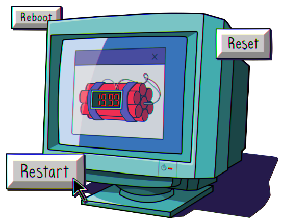

Subscribe to the podcast to receive new episodes as soon as we release them

The Y2K bug generated a lot of fear, but all that hype fizzled when the new millennium didn’t start with a digital apocalypse. It turns out that fear was just aimed at the wrong catastrophe. While plenty were riding high on the rise of the internet beyond the Y2K scare, another disaster had been brewing since 1995—and would bring them back down. But the dot-com bubble wasn’t the end. The internet was here to stay.
Not long after the turn of the millennium, the dot-com economy collapsed. Peter Relan points to the flawed business plans that fueled the dot-com bubble, and how many entrepreneurs and investors underestimated the complexity of building a business on the internet. Ernie Smith tells the story of Pets.com, and how a similar idea a decade later had a much better chance of succeeding. Gennaro Coufano reveals the element of luck that saved Amazon from going under—and how it evolved in the aftermath. Julia Furlan reflects on the changes the dot-com bubble brought, and what’s left to consider. And Brian McCullough describes how the dot-com bubble paved the way for a more resilient digital economy.
00:04 - Saron Yitbarek
It's the final seconds of 1999. Alongside the partying, there's anxiety, catastrophe-scale anxiety, and that's because nobody knows whether the world's computers are going to survive the end of the millennium. Will a Y2K bug plunge our digital lives back to the Stone Age?
00:29 - Saron Yitbarek
Hmm, I guess not. Our tech didn't crash when clocks ticked over to the year 2000. But here's the thing: As we soared happily into the future, there was a tech catastrophe waiting around the corner. It just wasn't the one we expected. I'm Saron Yitbarek and this is Command Line Heroes, an original podcast from Red Hat.
00:55 - Saron Yitbarek
All season we've been telling the story of one of the most extraordinary years in tech history—1995. It was the year that fueled e-commerce, and web design, and search engines. 1995 was the year our online lives truly took shape and the dot-com bubble began dominating the stock market. For our season finale, we're looking at the end of that wild period of invention and growth. But 1995 didn't end after 12 months.
01:28 - Saron Yitbarek
From the tech world's perspective, the true end to 1995 arrived on March 10 of the year 2000. That was the moment the NASDAQ reached its all-time high, fueled by a fever of excitement about the world wide web. And then, well, here's the thing about bubbles. They burst and when the dot-com bubble burst, three-quarters of NASDAQ's value soon evaporated. The value of all those dot-com startups was thrown into question, and a new frontier of web-based technology had to be radically reimagined.
02:08 - Saron Yitbarek
Had it all just been a mirage, or was there something real behind the dream of 1995? This is the story of that fateful moment when one future came to a crashing end and a new future arrived on the horizon.
02:26 - Peter Relan
By '97, the business plans that were being created were starting to be, shall we say, increasingly less "deep".
02:38 - Saron Yitbarek
Peter Relan is a technologist who runs an incubator in Silicon Valley. And he was there for the late 90s rollercoaster and saw startups hitch themselves to the dot-com craze.
02:50 - Peter Relan
You really did see a lot of people who were non-engineers coming to Silicon Valley with a couple of pages of an idea and presenting it to the venture capitalists and getting funding.
03:05 - Saron Yitbarek
Once your new venture was funded, you’d go hire a CTO, or engineering manager, and get them to bring your idea to life. Business plans could be minimal, scrawled on a napkin, and that had some pretty huge consequences. It meant companies were being formed without reserves of cash, without any worries about overhead or profits, without any real plan for how to succeed in anything other than a bubble.
03:31 - Saron Yitbarek
Relan worked in one of the late 90s startups that actually had more than a half-baked idea behind it. In 1998, he joined an online grocery delivery service called Webvan, as their senior VP of Technology. Webvan's plan was to cut out the grocery store and bring your food to your front door at the click of a few buttons. Today, that sounds like a decent proposition. But back in 1998, it strained the limits of what could be done. Like most 90s startups, there were also a few holes in their business plan.
04:05 - Peter Relan
The business plan included a service that was really good, high-quality products and brands, delivery at no extra charge, no questions asked upon returns, self-selected delivery slots down to a 30-minute window of your choice. You can't just do all of that and not have a premium pricing model. And the pricing model was supposed to be Safeway pricing. I think that was a combination that just was not going to pan out.
04:38 - Saron Yitbarek
But the other problem was timing. A shiny new startup in the late 90s had just a few years of grace to build up the kind of cash reserves that would help them survive the bubble bursting, and think how hard it would be to save much cash with the kind of overhead early web companies had to carry. Webvan's warehouse in the Bay area was the size of 18 supermarkets. So that's not cheap. But even more important, it was a digital company operating at a time when everything had to be built from scratch and maintained by you and you alone.
05:15 - Peter Relan
So you built everything from the ground up, including automation of the warehouse, and the delivery hub and spoke model for sending the trucks and vans out to all the people's houses, and the network infrastructure, and the datacenters, and all the software. So it is quite a remarkable amount of work to do when you start with a warehouse model like that.
05:40 - Saron Yitbarek
When Relan arrived at Webvan, he realized he’d need at least 100 engineers to handle their software systems networking and warehouse automation. Then there were interfaces for the drivers' PalmPilots so they'd know where to go. Dev ops, customer service systems, I mean, imagine you wanted to, I don't know, draw a picture, but first you had to go build all your own art supplies.
06:04 - Peter Relan
The hardest part really was the automation of the warehouse. We had 5 miles of conveyor belts and you had to route the totes, which capture the stuff that's going to go into an order and then be shipped to the customer. And you have to also make sure that the software is such that it routes the totes to the different parts of the warehouse, so a spaghetti jar doesn't end up on top of the tomatoes in that tote, because it'll crush the tomatoes. So you had to really do a lot of sophisticated algorithms to bring it all together and make it work.
06:40 - Saron Yitbarek
This is what pioneer days look like. Every element has to be invented and every dot-com startup had to invent their infrastructure for themselves. Once you realize how expensive all this was, it's not a surprise that they didn't have much cash to stay afloat when the stock market crashed.
06:59 - Peter Relan
Really, the only infrastructure you've got was electricity and a network connection and a cage, which would be called the datacenter and say, all right, have at it.
07:10 - Saron Yitbarek
You'd buy your own machines, hook them up inside those cages, and try to string together whatever you needed.
07:17 - Peter Relan
We also had a network control center and operations team to monitor these servers and replace them if something broke, and that was a constant job.
07:27 - Saron Yitbarek
All those levels of work, all those huge costs simply don't exist today. We forget how much infrastructure we take for granted. I mean, today...
07:37 - Peter Relan
All that is hidden away behind this beautiful cloud. Everything just works 24/7. Nobody today thinks about buying a server or a router.
07:48 - Saron Yitbarek
But for companies like Webvan, those extra costs finally came to a head on March 10, 2000, when the dot-com bubble burst. Among the hundreds of casualties were retailers like etoys.com and social media sites like the globe.com. But the site that came to epitomize the fast rise and faster fall of the dot-com bubble was...
08:14 - Ernie Smith
Pets.com.
08:15 - Saron Yitbarek
That's Ernie Smith, editor of an internet history newsletter called Tedium. Smith wrote about how in their brief heyday, Pets.com was buying Super Bowl ads, swallowing competitors, and going public, all in a matter of months. The site was going to be the online retailer for all your pet's needs. They would treat it like a unicorn, but in the end, Pets.com had the lifespan of a gerbil, 27 months.
08:45 - Ernie Smith
It was founded by a prospector who had the right domain name and was able to build a business around it. And it took a lot of time to build that business because of when it was founded. It required a lot of resources that modern companies would not have to worry about today, but were essential back then. The whole thing lived, became hard to ignore, and then died.
09:13 - Saron Yitbarek
So like Relan described with Webvan, the Pets.com failure was a question of timing. They had the right idea, but they didn't have the infrastructure to make that idea sing.
09:25 - Ernie Smith
If they had done it a few years later, it would have worked. If the timing was just a little bit better, it would have worked. They had to acquire more than 40 engineers. They had to put together their own customer service department and cloud computing, there was no Amazon Web Services back then, so they had to put together their own server farm and have IT people manning it at all times.
09:51 - Saron Yitbarek
That kind of overhead plagued the entire industry and it made them vulnerable. We know now that the infrastructure problem was a temporary one. A new reality was around the corner. All those expensive components of running a web business were going to be re-imagined as services that you could simply rent. Only problem was surviving until then, and only the lucky ones were going to make it past the year 2000.
10:22 - Gennaro Cuofano
There were a couple of things that happened that really saved Amazon.
10:27 - Saron Yitbarek
Gennaro Cuofano is the founder of FourWeekMBA, where he consults and educates the public on business model strategies. We asked him to explain what allowed Amazon to survive the bursting bubble when so many others crashed and burned. We talked about Amazon's huge success in our e-commerce show, episode 5 in this season. But remember, Amazon was founded in the mid-90s. They could have been another Pets.com. But Cuofano says 2 crucial things happened that allowed Amazon to survive. First, America Online, maybe the biggest brand on the web at the time, invested $100 million bucks.
11:10 - Gennaro Cuofano
And this was a very important deal because it helped the company to actually improve its cash balance.
11:15 - Saron Yitbarek
And second, Amazon issued a convertible bond just one month before the bubble burst and bought it for $672 million dollars.
11:26 - Gennaro Cuofano
Which as you can imagine, this was like really cash that saved the company.
11:30 - Saron Yitbarek
Those 2 factors gave Amazon a huge cash advantage over other dot-coms who were caught unprepared. Peter Relan agreed, saying without all that cash, Amazon could easily have been just another victim of the burst bubble.
11:46 - Peter Relan
I was speaking with John Doerr, the VC (venture capitalist) who backed Jeff Bezos, and he said Amazon would have gone bankrupt if they hadn’t been able to raise $2 billion in 2000.
11:56 - Saron Yitbarek
So Amazon survived, but they were also shaken. It was clear they had to evolve. Cuofano says that for Amazon, the bursting bubble inspired a massive change in the way they did business.
12:09 - Gennaro Cuofano
We can see this transition from 2001 to 2003 when Amazon, after this near death experience had to figure out how to scale from there, because revenues were actually slowing down and to gain a second stage of traction from there, Amazon had to understand how to change its way of doing business.
12:29 - Saron Yitbarek
For all its destruction, the dot-com bubble was also a teacher. Surviving meant reimagining how a web-based company could operate. And the crucial missing piece was a solution to the overhead problem. People were never going to make a living online if every piece of infrastructure had to be built from scratch. And in that simple truth, Amazon saw their opening. Somebody had to start providing that infrastructure as a service. Why not Amazon?
13:00 - Gennaro Cuofano
Amazon started to think more as a platform business model. And already before 2001, Amazon had experimented with hosting other e-commerce by selling, for instance, used items on the platform. But it was really a structural change from 2001 going forward.
13:18 - Saron Yitbarek
In 2001, only 6% of Amazon sales were made by third parties. By 2003, that number jumped to 22%. Amazon had learned the dot-com bubble's most important lesson: startups need platforms and services to survive, not just smart ideas. Companies need infrastructure.
13:41 - Gennaro Cuofano
It was really a structural change.
13:43 - Saron Yitbarek
But Amazon didn't just open the gate for third parties on their own site. They also created an entirely new branch of their business in 2006, Amazon Web Services, which began providing more and more cloud-based infrastructure to all those startups that couldn't afford to build their own.
14:02 - Gennaro Cuofano
When Amazon approached the problem, they asked the question, how do we scale from here? And they understood that they needed to make the transition into a platform business model. They realized that now they needed to build a solid tech platform, which could be used solely with the purpose of helping other third-party stores to be built on top of Amazon. This was the turning point.
14:25 - Saron Yitbarek
Amazon became an infrastructure provider. Big players like Toys R Us and Target signed up. Soon, Microsoft, Google, and IBM were offering cloud-based infrastructure, too. It solved a huge problem that left so many companies vulnerable in the late 90s. Basic web infrastructure was now a service you could hire. For startups, overhead dropped and possibilities expanded. For some, it was the return of those 1995 glory days, only this time we'd learned a few lessons.
15:05 - Julia Furlan
I think that people, hopefully, they're thinking about profits differently.
15:11 - Saron Yitbarek
Julia Furlan is the host of Vox Media's "Go For Broke" podcast, which has a whole first season about the dot-com bubble. She told us the ground shifted after the bubble burst. For one thing, startups weren't rushing toward an IPO as often. Building something on the web was no longer about just grabbing a cool domain and hoping people invest in it. The web was growing up. Quick side note, that doesn't mean there aren't still boom and bust stories. There's always going to be a WeWork in the news. What I'm talking about, though, is the larger culture. We started this season by talking about the Netscape IPO in 1995.
15:52 - Julia Furlan
This is the moment when everybody sort of realized, "Hey, there's money to be made. There's gold in them there hills."
15:59 - Saron Yitbarek
But here, at the end of the season, what's interesting is: the evolution from get-rich-quick schemes to the idea that the web is a place to do real sustainable business. The web isn't just something to exploit. It's a place to experiment and grow and thrive.
16:16 - Julia Furlan
One of the big lessons is that if you're going to start a company, it's a pretty good idea for you to have a business model that functions, even if nobody cares, even if everybody around you is saying like, "That doesn't matter. Profits don't matter." If you are in the position of creating a business or starting a business or getting investment, ask yourself, "How are we going to make money?"
16:44 - Saron Yitbarek
While working on the show, Furlan discovered another change, too, a change in responsibility.
16:50 - Julia Furlan
What will be the effects of an absurd amount of success? Are you going to perhaps undercut an entire union industry that's existed for hundreds of years, like Uber did for the cab companies? When we disrupt, oftentimes it's considered this great positive thing, but I think that I would caution everyone to really consider what it means to disrupt and to take that very seriously.
17:25 - Saron Yitbarek
After our Netscape IPO moment, after 1995, it was time to ask, not just how the web could become a money machine, but how it could do some good.
17:35 - Julia Furlan
I think people should think about their companies and their technologies in the larger ecosystem of the world, because I think that hasn't always been the case in Silicon Valley, and that hasn't always been the case in business, and we can do better.
17:50 - Saron Yitbarek
Furlan is calling for something we discussed in our last season finale. Check out the end of season 6 for an episode about venture capital and how it can support sustainable companies instead of just money-making unicorns.
18:08 - Saron Yitbarek
The path from 1995 to 2000, from dangerous heyday to a more stable industry, isn't really an anomaly. In the middle of the 19th century when a brand new thing called the railway arrived, people raced to invest in that tech, too. There was a railway bubble and just like the dot-com bubble, it ended up bursting. People lost a lot of money. But Brian McCullough, host of the podcast "Techmeme Ride Home", reminded us that burst bubbles aren't just cautionary tales. They're also the start of something new.
18:43 - Brian McCullough
When the dot-com bubble burst, there was all of this investment in infrastructure, laying fiber and laying the groundwork, for what we would now call cloud computing and having the infrastructure in terms of actual server farms and datacenters and things like that.
19:02 - Saron Yitbarek
The tracks weren't ripped up after the railway bubble burst, and the fiber optic cables didn't disappear when the dot-com bubble burst either. In fact, in both cases, we inherited the landscape they prepared for us.
19:16 - Brian McCullough
The groundwork was all laid in the dot-com bubble. And then all of the companies that we're familiar with today—the Googles, the Facebooks, Instagrams, what have you, because there was this glut of infrastructure—it was cheap for all of them to come to fruition and essentially create the internet world that we're living in.
19:33 - Saron Yitbarek
By the time those post-bubble companies came around, they had the luxury of focusing on their products alone. The infrastructure and the technology stack were just waiting for them.
19:46 - Brian McCullough
Today, there are entire libraries of open source and free software that you can plug and play. If you need to have an e-commerce backend, there's all sorts of plug and play to do that. Not only in the 90s, did you have to code that all yourself, you had to hard code your own website.
20:04 - Saron Yitbarek
McCullough points out the work those early companies did played a vital role in our technology's evolution. They were the first on the battlefield, the ones who threw themselves at the unknown.
20:15 - Brian McCullough
You had to have some people lead the way, and the leaders often are the ones that get the arrows in their back for their troubles, but you have to have generations rise, and then another generation come after them with slightly different ideas, and another generation come after that. I think that's just the nature of capitalism.
20:34 - Saron Yitbarek
In fact, it's the nature of evolution. And from 1995 to the bursting bubble, to the world we live in today, that dramatic evolution brought us every fantastic opportunity we have.
20:54 - Saron Yitbarek
If you wanted to spin up a little online company today, you could do that from your sofa, but that's only possible because back in 1995, some dreamers started dreaming. We get to make use of all the infrastructure, all the platforms, all the tech that they had to wrestle into being.
21:14 - Saron Yitbarek
So yes, there were some bold business decisions made during the bubble. And yes, some of those 1990 startups behaved like teenagers who stole the keys to mom and dad's car. But you know, players like Pets.com and Webvan were also pioneers. They were throwing ideas at the wall, trying to imagine for the first time, what the web might one day become. And out of those huge risks they were taking during the dot-com bubble, came the infrastructure that command line heroes rely on today. All season long we've seen how the world we take for granted was built by coders and engineers who had an audacious vision of what the future could be. In a way, we're all still dreaming the dream that came out of that brilliant, outlandish, game-changing year, 1995.
22:11 - Saron Yitbarek
You can learn more about how 1995 changed our online lives by checking out all the bonus material we've collected over at redhat.com/commandlineheroes. And that does it for season 7, but stay tuned because season 8 is already in the works. Until then, I'm Saron Yitbarek, and this is Command Line Heroes. Keep on coding.
More from the episode...
About the art
It’s been said that all good things come to an end, and the boom of the 90’s internet was no exception. What began as a practical tool for communication and discovery transformed into an e-commerce gold rush. As the decade drew to a close, some speculators sensed impending doom in the form of Y2K, infrastructure impracticalities, and bloat. While much of the tech industry was riding high on limitless prosperity, these doomsayers knew the whole empire was built on a ticking time bomb primed to blow. And blow it did. The resulting combustion didn’t spell the end of the internet, though. Instead, from the ashes grew a much more robust and savvy industry that was a little older and a little wiser.
Kendall 'Boo Boo' Howse
Senior Designer, Red Hat
Further Reading
Each episode is based on a lot of research. Here are just a few of the resources we used to learn about the bubble:
The $1.7 trillion dot.com lesson by David Kleinbard
The little-known deal that saved Amazon from the dot-com crash by Timothy B.
Lee
All Sock Puppets Go To Heaven by Ernie Smith
The New Economy Was a Myth, Right? by James Surowiecki
Turns Out the Dot-Com Bust's Worst Flops Were Actually Fantastic Ideas by Robert McMillan

The NASDAQ Composite Index went
from a new high of 5,048.62 in March 2000
to 1,139.90 in October 2002—wiping out
trillions of dollars of stock value
Get the newsletter
After each episode drops, we send commentary from the Command Line Heroes team, as well as links that help you take a closer look at the topics we cover. It’s as simple as that.
Presented by Red Hat
For 25 years, Red Hat has been bringing open source technologies to the enterprise. From the operating system to containers, we believe in building better technology together–and celebrating the unsung heroes who are remaking our world from the command line up.